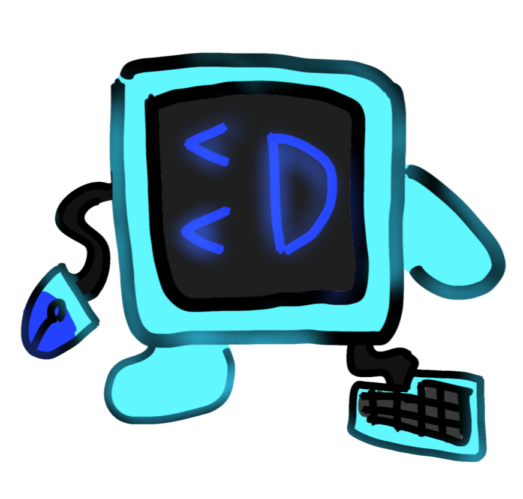

Los Pyces son entidades que vivieron unos cuantos años antes del descubrimiento de Bitlands en 2026.
Originalmente eran ordenadores que se actualizaron para el nuevo mundo, ahora siendo de color azul y con una pantalla azul oscuro. Son más felices que su contraparte no actualizada.
Los Pyces, como bien se sabe, tienen un ratón a modo de mano y un teclado roto. Estos se han modificado para encajar con la nueva estética también.
Estos seres que habitan Bitlands planean reconstruir la civilización que una vez habitó este lugar, antes del incidente que hizo que la humanidad se evaporara del nuevo mundo.
Los Pyces no son malvados, y sus diferentes personalidades y estéticas son producto de una fábrica llamada PixelStar Studios. Sin embargo, no todos los Pyces son pacíficos — algunos buscan crear conflictos. Así que cada uno es diferente al anterior.
✨ ¡Descúbrelos a todos para ver sus diferencias y descripciones ocultas!
Ah, y esta actualización tiene que ver con la Portalogía, que se explica en otra página.